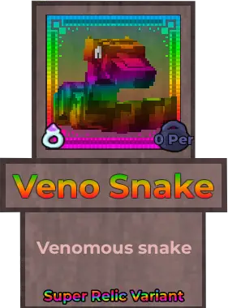
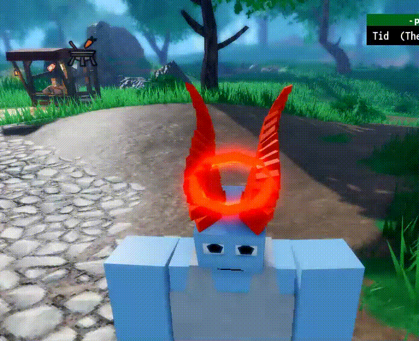

Super Relics
SUPER Relics???
Super relics are exceedingly rare variants of normal relics. They can only be obtained by opening relic presents, and have a 1/25 chance to be dropped. All relics, even ones that cannot be recolored, have a super relic variant. The recolorable part of a super relic will have a changing rainbow gradient instead of a static color, similar to a piece of equipment dyed with Relic Extract.
History
The firt super relic to ever be unboxed was the super relic Veno Snake, and was opened by the player Zoopa (Spielmitmir22) [That's me!]. There are currently a total of 5 super relics to have been unboxed, those being, in order:
- Veno Snake
- Conqueror's Mask
- Celestial Champion Chestplate
- Sunken Warrior Chestplate
- Ace's Deck
- Kaylie's Halo
- Bojji
Stopped counting after this because there are too many to keep track of!

The first super relic to be unboxed was the super relic variant of the Veno Snake

A GIF of the super relic Veno Snake
Image Gallery

A GIF of the super relic Kaylie's Halo and Skai's Horns leaked by the developer Tid

A GIF of the super relic Oof's Space Head

A GIF of the super relic Adaptation Wheel